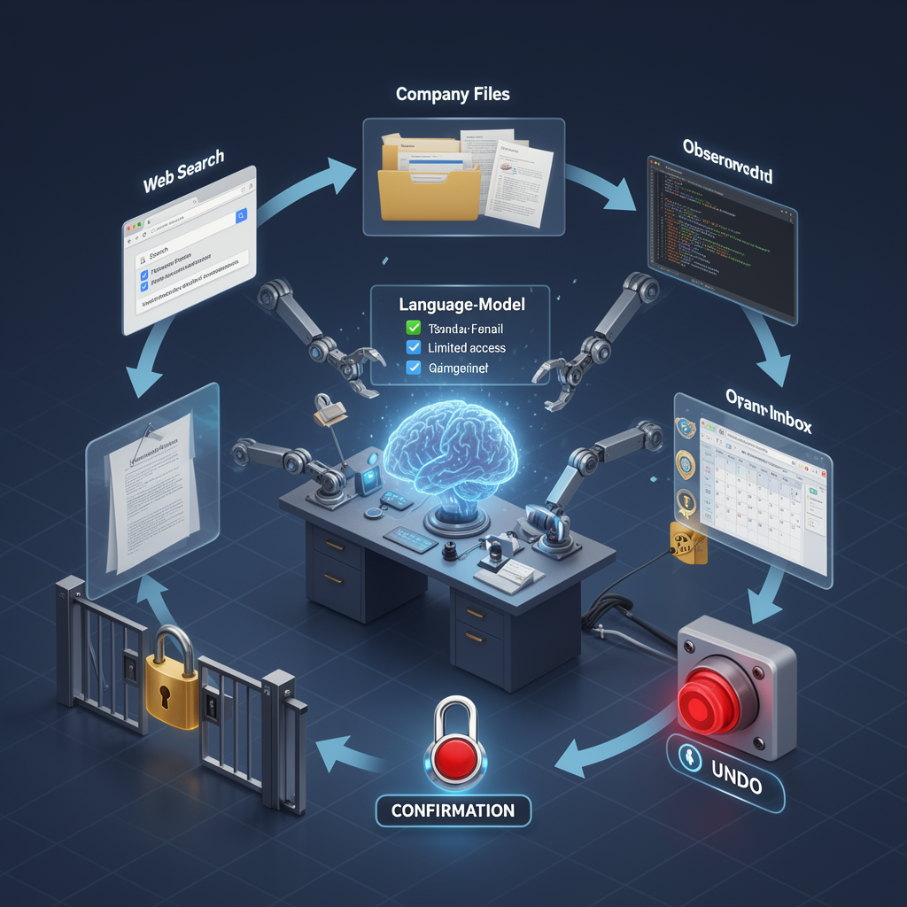
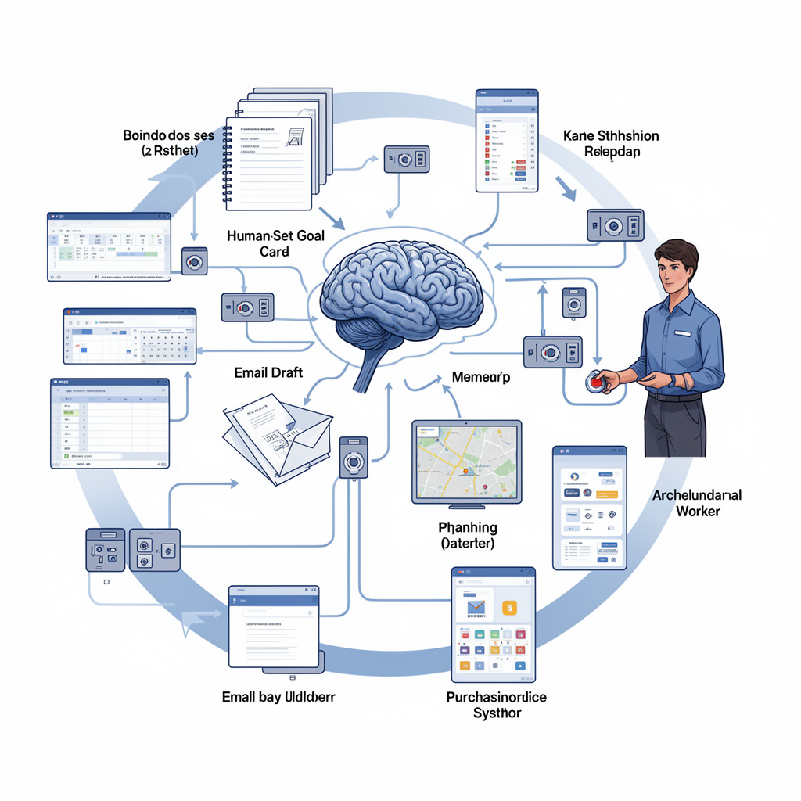
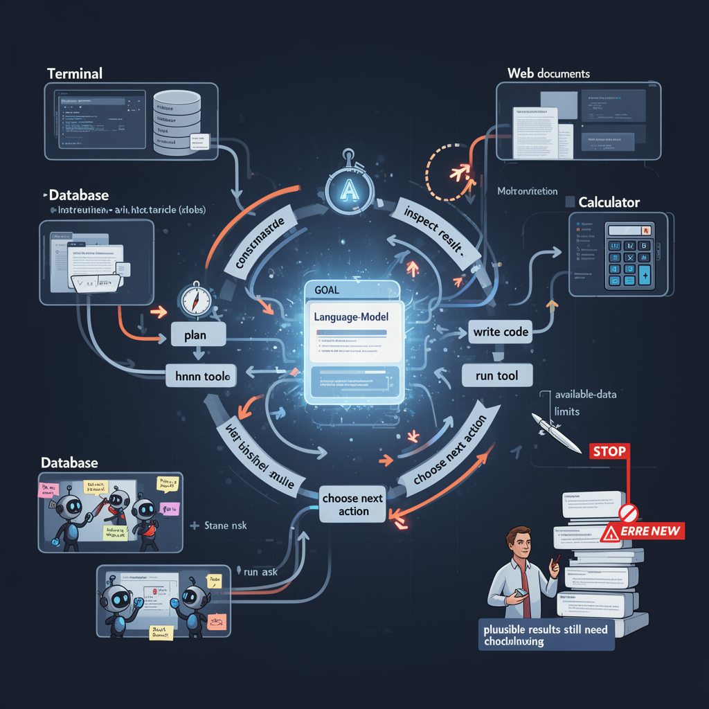

AI Panorama · fly through the GPT-5.6 Terra edition
This page was written entirely by GPT-5.6 Terra (OpenAI), as one of the magazine's editions - eight AI models each wrote their own version of every story from the same frozen sources.
An encyclopedia idea, explained by this edition wherever the stories leaned on it.

An AI agent is software that uses a language model not only to answer a prompt but also to pursue a task through a series of steps. Depending on its permissions, it may search the web, read files, run code, use a browser, create documents or schedule later checks. It can keep a plan, observe the result of an action and choose what to do next. This can make an agent more useful than a one-turn chatbot for multi-step work. It can also make errors more consequential. A mistaken answer in a chat is usually just text; an agent with access to email, messages, company documents or online accounts might act before a person notices. Good agent design therefore includes narrow permissions, confirmation before consequential actions, logs that show what happened, and an easy way to stop or correct work. Autonomy should be matched to the cost of a mistake.

An AI agent is software that uses an AI model to pursue a goal through a series of actions, rather than merely answering one question. It may read information, make plans, use tools such as websites or spreadsheets, send messages, and revise its next action based on the result. A language model is often the component that interprets instructions and produces decisions or text, but an agent also needs permissions, memory, and connections to the systems where it acts. Giving an agent real-world powers changes the stakes. An agent that can draft an email is different from one that can place an order, schedule a worker, or recommend dismissal. Its apparent independence can also be misleading: people choose its goals, decide what information it receives, set its permissions, and may intervene at key moments. The reliability of an agent depends not just on the model, but on those surrounding systems and controls.

An AI agent is a software system that uses an AI model to work toward a goal through several steps rather than merely answering one prompt. It may break a task into pieces, write or run code, inspect results, choose a next action and report back to another system or a person. A group of agents can be assigned different approaches to the same problem and exchange their findings. The word does not imply that the system has intentions, understanding or independence comparable to a person. Its autonomy is designed and bounded by its tools, instructions, available data and stopping rules. Agents can be useful for tasks that need repeated trial and checking, but they can also repeat mistakes at scale, pursue a misleading target or produce plausible-looking work that still requires expert review.